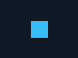

GIF · up to 256 palette colors
Global palettes keep colors consistent. Per-frame palettes are available for streaming.
Write optimized animated GIF and APNG files from Tessel images. Keep GIF palettes steady, preserve full-color alpha in APNG, and crop unchanged frame regions.

Use GIF for compact, broadly supported animations; choose APNG when full RGBA color and partial transparency matter.
Global palettes keep colors consistent. Per-frame palettes are available for streaming.
A standard PNG first frame, with full alpha and optimized animated updates.
require "flipbook"
frames = 60.times.map do |index|
image = Tessel::Image.new(320, 240, fill: "#101827")
image.fill_rect(index * 4 % 320, 100, 32, 32, "#38bdf8")
image
end
Flipbook.write("animation.gif", frames, fps: 30, loop: true)
Flipbook.write("animation.png", frames, fps: 30, loop: true)